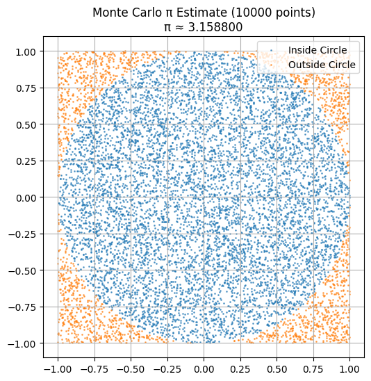
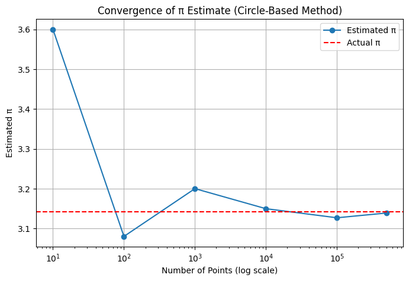
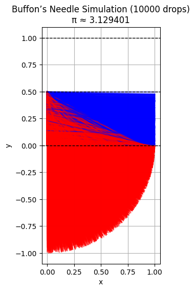
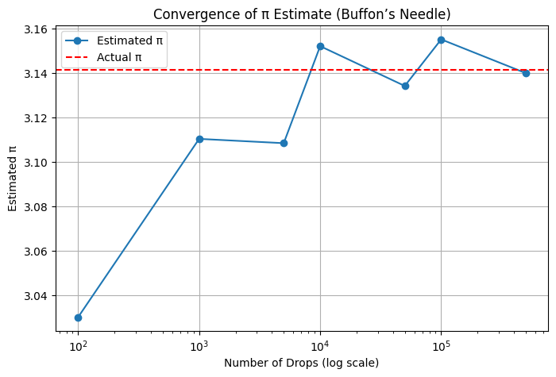

Problem 2
Monte Carlo Estimation of \(\pi\)
Monte Carlo simulations are a powerful way to estimate values using randomness. One of the most elegant examples is estimating \(\pi\) through geometric probability. This project explores two classic methods: the circle-based approach and Buffon’s Needle experiment.
1. Circle-Based Method
Theoretical Foundation
A unit circle is inscribed within a square of side length 2 (extending from -1 to 1 in both \(x\) and \(y\) directions). We randomly generate points inside the square and calculate the fraction that falls within the circle.
- Area of the square: \(4\)
- Area of the circle: \(\pi\)
The probability a point lands inside the circle is:
Thus, \(\pi\) can be estimated by:
Convergence Analysis
- This method has a convergence rate of \(\mathcal{O}(1/\sqrt{n})\).
- To achieve approximately 2 correct decimal digits, we typically need around 10,000 points.
- Accuracy improves slowly: even with 1,000,000 points, the estimate might only stabilize to 4 correct digits.
Visualization Notes
- Points are plotted with two colors: inside the circle (e.g., blue) and outside (e.g., red).
- The visual clearly illustrates how the density inside the circle relates to the estimate of \(\pi\).
- A convergence graph (\(\pi\) estimate vs number of points) shows how the estimate fluctuates and stabilizes with more samples.


2. Buffon’s Needle
Theoretical Foundation
This classical probability problem involves dropping a needle of length \(L\) on a plane with equally spaced parallel lines a distance \(d\) apart (with \(L \leq d\)).
The probability the needle crosses a line is:
Rearranged to estimate \(\pi\):
Where:
- \(N\) is the number of throws
- \(C\) is the number of crossings
Convergence Analysis
- This method converges even more slowly than the circle-based method.
- The estimate is highly variable, especially when crossings are rare (e.g., short needle, few drops).
- Often requires hundreds of thousands of throws to produce a decent estimate.
Still, it's historically significant and a clever geometric trick to estimate \(\pi\) without geometry per se.
Visualization Notes
- The needle's position and orientation are shown relative to the lines.
- Needles that cross a line are colored differently (e.g., red), offering a clear visual of successful "hits".
- The visual offers intuition into the randomness and rare event behavior that drives this method.


3. Summary Comparison
| Method | Accuracy per 10,000 samples | Convergence Rate | Notes |
|---|---|---|---|
| Circle-Based | ≈ 2 decimal digits | \(\mathcal{O}(1/\sqrt{n})\) | Simple, stable, and easy to visualize |
| Buffon’s Needle | ≈ 1 digit or less | Slower, high variance | Elegant idea, but inefficient for estimation |
4. Python Simulation
import numpy as np
import matplotlib.pyplot as plt
# === Circle-Based Method ===
def estimate_pi_circle(num_points):
x = np.random.uniform(-1, 1, num_points)
y = np.random.uniform(-1, 1, num_points)
inside = x**2 + y**2 <= 1
pi_estimate = 4 * np.sum(inside) / num_points
return pi_estimate, x, y, inside
def plot_circle(x, y, inside, num_points, pi_estimate):
plt.figure(figsize=(6, 6))
plt.scatter(x[inside], y[inside], s=1, label="Inside Circle", alpha=0.6)
plt.scatter(x[~inside], y[~inside], s=1, label="Outside Circle", alpha=0.6)
plt.gca().set_aspect('equal')
plt.title(f"Monte Carlo π Estimate ({num_points} points)\nπ ≈ {pi_estimate:.6f}")
plt.legend()
plt.grid(True)
plt.show()
def convergence_circle(trials):
estimates = []
for n in trials:
pi_est, *_ = estimate_pi_circle(n)
estimates.append(pi_est)
plt.figure(figsize=(8, 5))
plt.plot(trials, estimates, marker='o', linestyle='-', label="Estimated π")
plt.axhline(np.pi, color='red', linestyle='--', label="Actual π")
plt.xscale('log')
plt.xlabel("Number of Points (log scale)")
plt.ylabel("Estimated π")
plt.title("Convergence of π Estimate (Circle-Based Method)")
plt.legend()
plt.grid(True)
plt.show()
# === Buffon's Needle Method ===
def estimate_pi_buffon(throws, L=1.0, d=1.0):
crossings = 0
positions = []
for _ in range(throws):
y = np.random.uniform(0, d / 2)
theta = np.random.uniform(0, np.pi / 2)
if y <= (L / 2) * np.sin(theta):
crossings += 1
positions.append((y, theta))
if crossings == 0:
return None, positions
pi_estimate = (2 * L * throws) / (d * crossings)
return pi_estimate, positions
def plot_buffon(positions, pi_estimate, throws, L=1.0, d=1.0):
plt.figure(figsize=(6, 6))
for y, theta in positions:
y1 = y
y2 = y - L * np.sin(theta)
x2 = L * np.cos(theta)
color = 'red' if y2 <= 0 else 'blue'
plt.plot([0, x2], [y1, y2], color=color, alpha=0.5)
for i in range(3):
plt.axhline(i * d / 2, color='black', linestyle='--', linewidth=1)
plt.title(f"Buffon’s Needle Simulation ({throws} drops)\nπ ≈ {pi_estimate:.6f}")
plt.gca().set_aspect('equal')
plt.xlabel("x")
plt.ylabel("y")
plt.grid(True)
plt.show()
def convergence_buffon(trials_list, L=1.0, d=1.0):
estimates = []
for n in trials_list:
est, _ = estimate_pi_buffon(n, L, d)
estimates.append(est if est else np.nan)
plt.figure(figsize=(8, 5))
plt.plot(trials_list, estimates, marker='o', linestyle='-', label="Estimated π")
plt.axhline(np.pi, color='red', linestyle='--', label="Actual π")
plt.xscale('log')
plt.xlabel("Number of Drops (log scale)")
plt.ylabel("Estimated π")
plt.title("Convergence of π Estimate (Buffon’s Needle)")
plt.legend()
plt.grid(True)
plt.show()
# === Example Usage ===
if __name__ == "__main__":
# Circle-Based Simulation
num_points = 10000
pi_c, x, y, inside = estimate_pi_circle(num_points)
plot_circle(x, y, inside, num_points, pi_c)
# Circle-Based Convergence
circle_trials = [10, 100, 1000, 10000, 100000, 500000]
convergence_circle(circle_trials)
# Buffon's Needle Simulation
throws = 10000
pi_b, positions = estimate_pi_buffon(throws)
if pi_b:
plot_buffon(positions, pi_b, throws)
# Buffon's Needle Convergence
buffon_trials = [100, 1000, 5000, 10000, 50000, 100000, 500000]
convergence_buffon(buffon_trials)